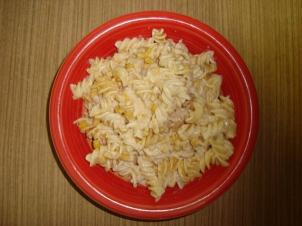

Tak nám zítra zase začíná další školní týden v Brně a já marně přemýšlím, co si s Pepou uvaříme tentokrát - až se večer doplazíme hladové ze seminářů a otevřeme ledničku. Proto ať žije tato nová blogová kuchařka, do které budu vkládat všechny naše “originální” recepty co-privát-dal ! Nechť slouží jako inspirace všem hladovým studentům, kteří sem náhodou zabloudí :-) !
Jako první sem uvedu recept na jedno mistrovské dílo, které už mockrát sklidilo ohlas a přitom na něm nic moc vpodstatě není. Autorská práva na ně má můj strýc, od kterého se musím v oblasti vaření ještě hódně učit…
suroviny:
- těstovinové vrtule
- kuřecí maso
- olej
- sterilovaná kukuřička
- koření: grilovací, bazalka, “pečené kuře”
- dressing: bílý jogurt, zakysaná smetana, šlehačka, kečup, česnek (tolik stroužků, kolik unesete :D), sůl
Vrtule uvaříme, kuřecí maso nakrájíme na nudličky. Rozpálíme olej a maso na pánvičce podusíme. Nakonec přimícháme do salátu kukuřičky a dressing. Jak prostý může život být :-)…

Kuřecí těstoviny
Komentáře (2)
Komentáře jsou uzavřené.